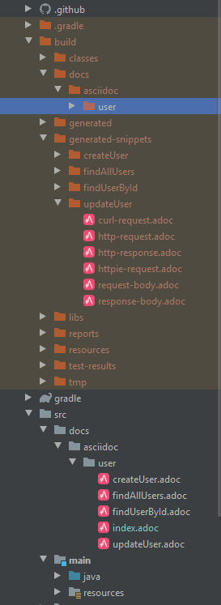

Integrate Asciidoc with Spring Restdocs
Preconditon
The following is based on Webflux
1 2 3 asciidoctor version: 3.2.0 spring restdocs version: 2.0.4.RELEASE dependency management: gradle
Some asciidoctor knowledge:
sourceDir: src/docs/asciidoc
outputDir: ${buildDir}/docs/asciidoc
Configuration
common config
The following config is not a complete configuration.
1 2 3 4 5 6 7 8 9 10 11 12 13 14 15 16 17 18 19 20 21 22 23 24 25 26 27 28 29 30 31 32 33 34 35 36 37 38 39 40 41 42 43 44 45 46 plugins { id 'org.springframework.boot' version '2.3.0.M4' id 'io.spring.dependency-management' version '1.0.9.RELEASE' id 'java' id 'org.asciidoctor.jvm.convert' version '3.2.0' } configurations { asciidoctorExtensions } ext { set('snippetsDir' , file('build/generated-snippets' )) set('springRestdocsVersion' , '2.0.4.RELEASE' ) } dependencies { testImplementation('org.springframework.boot:spring-boot-starter-test' ) { exclude group: 'org.junit.vintage' , module: 'junit-vintage-engine' } testImplementation 'io.projectreactor:reactor-test' testImplementation "org.springframework.restdocs:spring-restdocs-webtestclient:${springRestdocsVersion}" asciidoctorExtensions "org.springframework.restdocs:spring-restdocs-asciidoctor:${springRestdocsVersion}" } test { outputs.dir snippetsDir useJUnitPlatform() } asciidoctor { configurations 'asciidoctorExtensions' dependsOn test attributes 'snippets' : snippetsDir inputs.dir snippetsDir } bootJar { dependsOn asciidoctor from("${asciidoctor.outputDir}" ) { into 'static/docs' } }
create docs/asciidoc/ directory
like this

index.adoc & updateUser.adoc(e.g.)
index.adoc
1 2 3 4 5 6 7 8 9 10 11 12 13 = Blog Restful API Purple Mystic; :toc: left:toc-title: Chapter:doctype: book:icons: font:source-highlighter: highlightjs:sourcedir: {sourcedir}/userinclude::createUser.adoc[] include::updateUser.adoc[] include::findUserById.adoc[] include::findAllUsers.adoc[]
updateUser.adoc
1 2 3 4 5 6 7 8 9 10 11 12 13 14 15 16 17 18 19 20 21 22 23 24 25 == *Backend: updateUser:* === Curl request: include::{snippets}/updateUser/curl-request.adoc[] === HTTP request: include::{snippets}/updateUser/http-request.adoc[] === HTTP response: include::{snippets}/updateUser/http-response.adoc[] === Request using HTTPie: include::{snippets}/updateUser/httpie-request.adoc[] === Request body: include::{snippets}/updateUser/request-body.adoc[] === Response body: include::{snippets}/updateUser/response-body.adoc[]
Other solution
remove :sourcedir: {sourcedir}/user from index.adoc
reconfigure asciidoctor task in build.gradle, like this
1 2 3 4 5 6 7 8 9 10 asciidoctor { configurations 'asciidoctorExtensions' dependsOn test attributes 'snippets' : snippetsDir inputs.dir snippetsDir sources { include '**/index.adoc' } baseDirFollowsSourceFile() }
Unit Tests
1 2 3 4 5 6 7 8 9 10 11 12 13 14 15 16 17 18 19 20 21 22 23 24 25 26 27 28 29 30 31 32 33 34 35 36 37 38 39 40 41 42 43 44 45 46 47 48 49 50 51 52 53 54 55 56 57 58 59 60 61 62 63 64 65 66 67 68 69 70 71 72 73 74 75 76 77 78 79 80 81 82 83 84 85 86 87 88 89 90 91 92 93 94 95 96 97 98 99 100 101 102 103 104 105 106 107 108 package team.star.blog.controller;import org.junit.jupiter.api.BeforeEach;import org.junit.jupiter.api.Test;import org.junit.jupiter.api.extension.ExtendWith;import org.mockito.Mockito;import org.springframework.beans.factory.annotation.Autowired;import org.springframework.boot.test.autoconfigure.web.reactive.WebFluxTest;import org.springframework.boot.test.mock.mockito.MockBean;import org.springframework.context.ApplicationContext;import org.springframework.http.MediaType;import org.springframework.restdocs.RestDocumentationContextProvider;import org.springframework.restdocs.RestDocumentationExtension;import org.springframework.test.web.reactive.server.WebTestClient;import reactor.core.publisher.Flux;import reactor.core.publisher.Mono;import team.star.blog.pojo.User;import team.star.blog.service.UserService;import java.util.List;import static org.mockito.Mockito.when ;import static org.springframework.restdocs.operation.preprocess.Preprocessors.prettyPrint;import static org.springframework.restdocs.request.RequestDocumentation.parameterWithName;import static org.springframework.restdocs.request.RequestDocumentation.pathParameters;import static org.springframework.restdocs.webtestclient.WebTestClientRestDocumentation.document;import static org.springframework.restdocs.webtestclient.WebTestClientRestDocumentation.documentationConfiguration;@WebFluxTest(UserController.class) @ExtendWith(RestDocumentationExtension.class) public class UserControllerTest { @Autowired private ApplicationContext context; private WebTestClient client; @MockBean private UserService userService; @BeforeEach void setUp (RestDocumentationContextProvider provider) { client = WebTestClient.bindToApplicationContext(context) .configureClient() .filter( documentationConfiguration(provider) .operationPreprocessors() .withRequestDefaults(prettyPrint()) .withResponseDefaults(prettyPrint()) ) .build(); User u1 = User.builder().id(1 ).name("Mystic" ).build(); User u2 = User.builder().id(2 ).name("Ran" ).build(); when (userService.findAll()).thenReturn(Flux.fromIterable(List.of(u1, u2))); when (userService.findById(Mockito.anyInt())).thenReturn(Mono.just(u1)); when (userService.save(Mockito.any(User.class))).thenReturn(Mono.just(u2)); } @Test void findUserById () { client.get().uri("/user/{id}" , 1 ) .exchange() .expectStatus().isOk() .expectBody(User.class) .consumeWith(document("findUserById" , pathParameters(parameterWithName("id" ).description("User ID" )) )); } @Test void findAllUsers () { client.get().uri("/user" ).exchange() .expectStatus().isOk() .expectBodyList(User.class) .consumeWith(document("findAllUsers" )); } @Test void createUser () { User u3 = User.builder().name("cc" ).build(); client.post().uri("/user" ) .contentType(MediaType.APPLICATION_JSON) .accept(MediaType.APPLICATION_JSON) .body(Mono.just(u3), User.class) .exchange() .expectStatus().isCreated() .expectBody() .jsonPath("$.id" ).isEqualTo(2 ) .consumeWith(document("createUser" )); } @Test void updateUser () { User u2 = User.builder().id(2 ).name("cc" ).build(); client.patch().uri("/user" ) .contentType(MediaType.APPLICATION_JSON) .accept(MediaType.APPLICATION_JSON) .body(Mono.just(u2), User.class) .exchange() .expectStatus().isOk() .expectBody() .jsonPath("$.name" ).isEqualTo("Ran" ) .consumeWith(document("updateUser" )); } }
Source Code
https://github.com/PurpleMystic-star/blog-backend